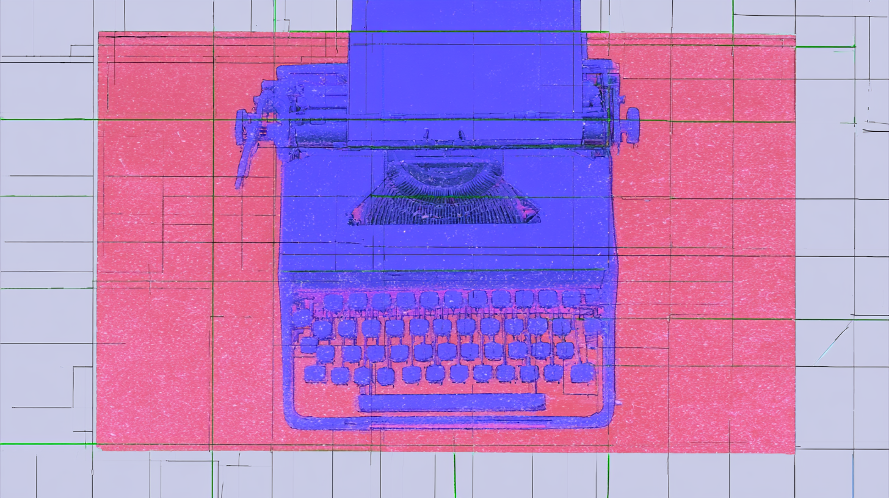

The New York Times' Brent Crane opens with the tell you already know: a comedian who calls himself "a fartist" made "The Puerto Rico Song" on Suno, and it has 20 million streams while real musicians grind for years. That's the tension. Warner already settled, letting Sheeran and Charli XCX opt in, while Universal and Sony litigate. Suno's guy says you'll know AI music when you see it. Millions of people happily drink Splenda.
The data newsletter Can't Get Much Higher runs the numbers on why nobody writes songs about actual cities anymore. The 1940s were peak place-name: musicals baked hometowns into their hit songs, and a single tune about Atchison or Topeka got covered by Crosby, Dorsey, and Garland until it felt everywhere. Add returning GIs and a country still adding states, and the charts went global. Now the map shrinks. The map at the end shows where we still bother to sing.
Kathryn Schulz, whose New Yorker essays have a way of turning obituary into argument, makes the case for Dolly Parton as America's great performer of authenticity through artifice. The wigs, the boob jobs, the walled-off childhood home and its fake public replica: Dolly told you everything was manufactured, which somehow made her the realest thing going. She sold sincerity by never pretending the surface was anything but the point.
01Music & SceneWriting about music and the culture around it. Criticism, profiles, interviews, and scene reporting, selected for insight rather than news value.
The New York Times tells a story about what it actually means when an artist shows up for their community. Drag performer Brigitte Bandit testified before Texas lawmakers using Dolly Parton's own children's book as her text — and lost. Then Parton sent her a rhinestone-covered guitar. No statement, no press release. Just a pink box. Sometimes the gesture is the whole argument.
The real loss isn't production value — it's visual language. This piece argues that the music video was one of the few funded spaces where Black artists exercised genuine visual authorship at scale, and that shrinking budgets don't just mean cheaper clips — they mean a gap in the cultural record. When frequency beats craftsmanship, the images that defined entire communities get replaced by TikTok dances nobody remembers next week.
Andy Burnham strumming Rusholme Ruffians in Kyiv isn't nostalgia for 1985, The Guardian argues, but for the long 90s: a moment when declinism felt like an open intellectual playground rather than a sentence. The piece traces how the Smiths' politics of exquisite despair curdled, first through Morrissey's nativism, then through Cameron cheerfully claiming This Charming Man on Desert Island Discs.
Refusing to fit Afrobeats' box has been Ayra Starr's whole strategy, and The FADER frames her new album Starrgirl as the payoff—a shift from "I have to be" to "I am." The 24-year-old blends amapiano log drums with R&B, pop and dancehall across 16 tracks, roping in ZAYN, Wizkid and Rema. A genre-bender leaning into confidence rather than category.
The cure for an album made entirely alone at a computer, it turns out, is other people. NME talks to Hakushi Hasegawa, Brainfeeder's first Japanese signee, about assembling a band of eccentric players for 'Honest Feeling Album' after their isolated 'Mahogakko'. The result adds guitars, horns and a metal chug, plus a bon-odori closer honoring non-binary people who came before.
Guitarist Marco Pirroni built Kings of the Wild Frontier in his parents' Harrow bedroom, then watched it become the visual-pop template MTV ran with. In this Guardian interview, tied to his memoir Your Money or Your Life, he recounts Adam and the Ants' 18 months of Antmania: paralytic royals, Playmobil pirate ships, and the vanity that ended it. He quit at 22, disillusioned.
Even a celebrity as beloved as Dolly Parton can't insulate her legacy from state budgets. The New York Times examines her Imagination Library, which has mailed 300 million free books to kids since 1995, and finds it only as durable as the state grants underwriting it. Some states are now cutting that support — the ceiling on celebrity philanthropy, arriving just after Parton's death.
A chart analysis examining Olivia Rodrigo's performance and comparing her trajectory to other emerging pop artists like Gracie, Audrey Hobert, and Adéla. The piece discusses how established artists rarely achieve breakout hits after album release and explores different pathways to chart success in 2026.
The first band ever called punk in print was a group of Mexican-American teenagers from Michigan: Question Mark and the Mysterians, whose "96 Tears" hit number one in 1966. Judy Cantor-Navas revisits her 2021 interview with the late Dave Marsh, the critic whose offhand 1971 Creem line about their reunion set fixed their place in rock history long after the industry chewed them up.
Part two of Herb Sundays' deep dive into electro's 1997-2005 run picks through electroclash, new electro, and disco nouveau alongside a few well-timed anniversaries: Secretly Group's 30 years in Bloomington, revisited by co-CEO Darius Van Arman, and the 15th-anniversary reissue of HTRK's Ghostly debut Work (work, work). A curatorial memory-jog for anyone who lived through the era's cold synths and sleaze.
02Music Industry AnalysisAnalysis of the music business. Deals, streaming economics, rights, and the power dynamics that shape what gets made and who gets paid.
While Spotify, Apple, and YouTube keep adding subscribers, Amazon Music has effectively stalled since early 2024. Music Business Worldwide digs into Midia Research's numbers: an 8.5% share of paying subscribers by volume, roughly 78.3 million users, down not just as a percentage but in real terms year-over-year.
What makes a catalog worth $300 million isn't just hit count. Luminate breaks down RHCP's Warner deal and finds the real value drivers: growing market share despite no new music since 2022, 66% of streams from abroad, a premium-heavy 91% listener base, and revenue spread evenly across deep cuts rather than propped up by a few songs.
As AI makes recorded music abundant and easy to produce, the industry’s real value may lie in the artists, venues, and scenes that gives music meaning.
Twenty years into a working career, the frontman of The Empty Pockets stopped chasing the gatekeeper's stamp of approval and started building direct-to-fan infrastructure instead, mailing 100,000 CDs to reach listeners himself. Hypebot runs his argument that validation and success are separate things, and that the encouraging-meeting-and-polite-pass loop is a game artists can't actually control.
The grim reliability of the death-streaming spike holds again: NME reports Dolly Parton's plays jumped 2,056 percent after her August 25 passing, hitting 26.3 million in a single day versus 1.2 million the week prior. 'Jolene' alone pulled 2.7 million. It's a familiar catalog-value pattern, but Parton's cross-generational reach — and the flood of tribute covers — makes the surge unusually broad.
Charts exist to measure accurately, not to judge worth, and Zinstrel argues the new 'substantially human made' eligibility rules from IFPI, Germany, and Australia confuse the two. Auto-Tune and sampling both triggered fights in awards bodies and copyright courts, never asterisks on the Hot 100. Deciding whether a song is human enough to count belongs somewhere other than a sales tally.
Swap out a merit-based pipeline and you shouldn't be surprised who fills the gap. Reading and Leeds replaced BBC Introducing's unsigned-artist stage with the Canopy, promising a "wider pool" but stocking it with rock scions and a Cowell boyband, per The Guardian. The result closes the last grassroots route to a major UK festival, right as streaming already squeezes emerging acts.
What is Dolly Parton's catalog actually worth? Billboard runs the numbers after her death at 80 revived the sale rumors from her aborted 2021 shopping trip. The math: roughly $17.5 million in annual revenue, a $9.27 million take-home once Sony's ownership of her RCA-era masters is factored out, and a superstar-multiple valuation landing near $220 million.
Long before celebrity brand-building was a playbook, Parton was practicing it. The New York Times argues that Dollywood and her studio and nonprofit ventures all trace back to a 1960s instinct about ownership — forming publishing company Owepar to control her copyrights. It's the same decision that made her refuse Colonel Tom Parker half of 'I Will Always Love You,' just scaled up.
Turnstile's genre-agnostic rise is the payoff of a system that stopped working, argues this Substack piece. Genres were never innocent taxonomies of taste; they were the industry's tools for sorting customers, from Billboard's "Race Records" chart to the physical aisles that made you feel you belonged in one. With 100 million tracks on the same slab of glass, those fences don't hold, and Turnstile walked through the gap.
03Music RecommendationsNew and recent music worth hearing. A featured pick plus additional recommendations, each with brief context and a link to listen.
▶
The Thinking of the World Began Pounding in Our Ears the Moment We Hit Shore — "Say What You Want"
Florian T M Zeisig's rotating collective treats rock like a beat tape: slow, swooning indie falling between slowcore, shoegaze, and the dreamier end of emo, assembled from three years of file-shared sessions rather than a band in a room. On the opener, more eaze's Mari Maurice Rubio pins Auto-Tuned jazz runs up front while the music hovers like a Galaxie 500 record stuck in a locked groove. Rock as jazz as Drain Gang emo rap.
REC 01
730turk
hot grease
♪ Florida trap / wild style rap
The Orlando rapper's signature trick is ping-ponging between high and low voices like multiple personalities wrestling for the mic, and across Trapculinary vol. 2 nobody's rapping like him. On "Fish Grease" he intersperses yelped lines between a rambly Juvi flow, building call-and-response with himself; the vision and precision evoke Young Thug's leaked "With That" session. The groovy Florida-via-Michigan production places him alongside Sada Baby and Rio Da Yung OG.
The closer on 'ii,' Denzel Curry and Kenneth Blume's nine-track, 24-minute collaboration, illuminated by Yebba's feature. Blume, who dropped the Kenny Beats name a while back, works like a man with a point to prove, his luminescent beats carving pathways between past and future while Curry packs word upon word into explosive flows. The concise span masks an information-overload approach that grants endless replay value.
Shatter the Standards frames this sequel around one live variable: the beats were all fixed before Dilla's 2006 death, so the album stands or falls on what a 54-year-old Busta brings now. Busta treats his flow as another drum flickering in the dead space between kick and snare, but the record's tension is half improvised memory (he abandoned writing by hand years ago) meeting half decades-old shelved production.
Shatter the Standards details production that pushes past the old boom-bap pocket: Mr. Porter anchors it, with Madlib on 'The Peejays' and Groove on 'Pretty Bird / Way U R,' while 'Joyful' ranges from trap to piano to soul to spoken word. 'Apple Juice' features Evans over a sample of D'Angelo's 'One Mo'Gin,' recorded months before his death. The songs name targets: on 'No Way' she calls out No Jumper and Vlad by name and tells the listener to put a gate on the culture.
Built around Inflo's piano and a live band, the record threads tough love through gentleness: 'Sunshine' calls her baby 'literal light,' but 'Heart Full of Love' remembers a mother's love only protects so far. When Rosie Danvers's strings and a choir arrive on 'Don't Let Me Fall,' strength and tenderness collide.
Mari rubio weaves resolute vocals and acrobatic harmonies through strings, guitar, banjo, and stuttering electronics, channeling Scritti Politti, High Llamas, and The Sea and Cake into a gently pulsing composition. Written while falling in love with guitarist Wendy Eisenberg, who sings on it, the song holds the tension of good things arriving while a pit of trauma sits in the background. From sentence structure in the country, out March 20th via Thrill Jockey.
A Centripetal Force release that sets the band's psychedelic guitar and synth pieces over laidback drum machines, per Flow State. Forty minutes, no vocals, from a roster built around experimental and instrumental music with an Americana bent.
A breakup album built around an interactive frame that feeds back on itself: "Schrödinger's Green Room" turns ambient dread into a list of intrusive thoughts imagined as a DJ in his head, goofy and he knows it. Eagle's writing is quick as ever, though the target stays vague, subjects and objects mistaken for each other. Rated a Standout at four-and-a-half stars, with "Out to Lunch" and "Watching a Movie Called Freedom By Myself" among the highlights.
Taja Cheek's third album synthesizes dancehall, tape meditations, slow jams, gospel, and crunched metal to tessellate how a person grows in a world not built for them to thrive in. Shatter the Standards notes it begins like a stammer, a four-line fragment of the same stalled sentence: "I keep trying to start the/Start."
The New York Times uses Parton's death to ask what kind of Southern Christianity she represented. The answer, built around Mary Berry's small Kentucky Baptist congregation, is a church that gathered janitors and doctors as equals, where political differences went unspoken because community life made them secondary. When the local agrarian economy collapsed, so did the congregation. The culture that held it together went first.
Asterisk Magazine makes a sharp case that Silicon Valley's AI-era fixation on "taste" misunderstands what taste actually is. It's not an innate, irreplaceable human superpower — it's a social skill, refined through relationships, friction, and the ability to articulate preferences to others. The Bauhaus knew this; so did Kant.
The Quietus reviews the BFI's second volume of Daniel Farson's ITV work, and the case for his relevance is easy to make: his 1963 Beat City documentary on Liverpool's music scene reads as essential cultural history, tracing the roots of The Beatles' moment through sea shanties, Irish immigration, Black communities, and poverty. The Shirley Bassey interview alone justifies the set.
The case here isn't against social media — it's against the assumption that performance is the only way to exist online. The alternative: own a corner of the internet that actually feels like yours (a blog, a digital garden, an artist site), build it out with genuine interests, and treat social platforms as occasional venue tours rather than a permanent stage.
A review of the film "Coyote vs. Acme" that explores how the movie handles the challenge of rebooting a nearly century-old piece of intellectual property, examining the film's approach to humor and its treatment of the classic cartoon characters.
A personal essay by Suleika Jaouad reflecting on completing her August Artist Residency despite medical challenges from chemotherapy, rediscovering painting, and an unexpected project painting a peacock coop with help from friends and neighbors.
05Sound on Sight Video ArchiveOne music video from the archive in each issue, ranging from a few months to sixty years old, with a short note on why it holds up.
▶
Plastic Rap — "Frieda"
1980 · downtown video art
Before Tom Rubnitz became downtown New York's patron saint of camp, he helped make this: a performer named Frieda rapping backed by a chorus line of dolls, production values scraping the floor on purpose. 'Plastic Rap' is Lower Manhattan circa 1980 deciding that cheap and ridiculous could be an aesthetic, not a limitation.
SOS 01
Ludacris
Get Back
♪ 2004 · Southern hip-hop
Spike Jonze gives Ludacris a pair of prosthetic Popeye arms and aims them at a man who won't observe bathroom etiquette. Interestingly enough, the man is Fatlip, the Pharcyde rapper whom Jonze had filmed four years earlier narrating the worst day of his life. In 2004, he is still the one getting hit.
Zürich, 1981. Mother's Ruin had been going since 1978, early enough that Swiss punk barely existed, and director Paul Grau shot 'Lost in Town' for the 'Want More' LP while the scene was still inventing itself. Snarl from a country nobody files under snarl.
Out of Los Angeles, Dorothy Fuzz stack sweet vocal harmonies over trippy psych and title the album 'Mad Art For A Mad Age,' which about covers it. '1 2 3 Understand Me' keeps reaching for connection and dissolving into haze before it can close the gap. Sunshine on top, something woozier underneath.
Jonathan Glazer sends a man stumbling through a tunnel, getting hit by cars over and over, muttering Thom Yorke's looped prayer. Each impact lands harder than the last until the final one doesn't. UNKLE and DJ Shadow built the track from dread and strings; Glazer turned it into a parable that earns its resurrection.
Spike Jonze films it like a pratfall in slow motion: Fat Lip narrating his own worst day, every small humiliation landing square on the beat. It's tragi-comedy played dead straight, an itemized series of humiliations played with a stand-up's timing. The Pharcyde's sharpest tongue turns self-loathing into the funniest, saddest three minutes the West Coast underground ever produced.
A Romanian pop grande dame, who'd spent five decades exploring the outer boundaries of samba, soul, and disco-pop, takes Pulp’s 'Common People' and sings it in her own language. The pairing is the pleasure: a voice raised on the state airwaves wrapping itself around a Britpop anthem about class.
Jeff Mills sits down with a single Roland TR-909 and turns pattern-building into performance. No mixer sleight of hand, no rack of gear. Just the machine that built Detroit techno getting reprogrammed live, hi-hats and kicks bent in real time by a man who treats the 909 like an instrument, not a preset.
Neil Halstead sings a name like he's trying to keep it from dissolving. Slowdive built their reputation on guitars that swallowed themselves whole, but 'Alison' is the song where a melody fights through the haze and wins. Three decades on, it remains the gentlest thing the Thames Valley scene ever produced.
A German DJ in a horse mask who answers to Stella Stallion and swears she's half-equine. The joke could have ended at the viral 'My Barn My Rules,' but 'only the best' keeps the mask on and aims it at luxury, deadpanning about wanting only the finest while the beat refuses to take her, or money, seriously.
06Love and Theft: Music Between CulturesWhen music crosses borders, inspiration can travel, but so can theft. These pieces look at what gets taken, what gets mistaken in transit, and who ends up on the invoice.
The idea of using music to foster cross-cultural dialogue seems almost inherently good. After all, we’d be better off if we’re sharing and talking, right? But the reality is often more complicated, and the history of these exchanges is littered with instances of power imbalances and even outright exploitation. Our first piece today is one of the morally thorniest examples of this exchange. Before he passed at the age of 37 in 1912, Samuel Coleridge-Taylor was probably the best-known Black classical composer of the Edwardian era, though he never saw a royalty from performances of his most successful piece. That piece was “The Song of Hiawatha,” his setting of a Longfellow poem that, according to the piece’s author, Tom Service, now reads as colonialist caricature and a white-empowering fantasy. Every year, from 1926 to 1939, the Royal Albert Hall housed a production of the piece using around a thousand performers decked out in red-face make-up and racialised caricature. Mohawk chief Os-ke-non-ton also performed in it, granting what the piece terms an apparent authenticity, but Service still finds the spectacle jaw-dropping.
Forty years on, people still argue about the ethics of Paul Simon’s mid-period masterpiece, Graceland. Simon cut the core sessions in South Africa, where apartheid meant the Black musicians could not be on Johannesburg’s streets after dark or use public transport. Ashley Kahn, who has a new book on the album, makes the case that Simon paid the South African musicians triple the daily rate of American union players. But the backlash over songwriting credits never stopped, and it came from the album’s own musicians: Los Lobos, Rockin’ Dopsie and the Zydeco Twisters among them, and guitarist Ray Phiri. A young Mark Batson, who would go on to produce for Beyonce and Eminem, confronted Simon at a Howard University Q&A, asking the legendary singer-songwriter how he could justify “taking over this music.”
To say that Max Mix, the Spanish DJ megamix sold as a compilation, was a hit is a bit of an understatement. Its twelve volumes from 1985 to 1992, nearly all from the same label’s catalogue, sold a staggering 32 million copies. Rolland calls the first of them poison and their success a shameful circus show. The Catalan DJs Mike Platinas and Javier Ussia behind the project cited the 1982 DMC championship as their point of inspiration, and Rolland gives the invention to Ben Liebrand, Alan Coulthard, and above all, hip-hop pioneer Grandmaster Flash, whose 1981 Wheels of Steel is the first real megamix in that reckoning. The only problem was that there was no DMC Championship in 1982 (that didn’t start until 1985), and the success of the series did as much to stunt DJ culture as it did grow it.
Six-piece Chilean boy band Q_ARE were assembled through online casting and trained for six months before they debuted in 2024. They sing in English, Spanish and Chilean slang over a production aesthetic that borrows heavily from K-pop. The piece traces how the Korean wave reached Chile through anime and widened into food, television, and skincare. The Rey Sejong Institute in Santiago has quadrupled its Korean-language students since 2019, and the Patronato neighbourhood now holds more than fifty Korean restaurants, many of them Chilean-owned. One member of Q_ARE says the obvious part aloud for NPR: though they take inspiration and influence from Korean music and culture, they are clearly not K-pop, because they are Latinos.
For years, Remezcla argues, K-pop leaned on outdated, caricatured takes on Latin rhythms and language. Samuel Arredondo Kim could be the corrective for that. He grew up in Bakersfield, born to a Korean mother and a Mexican father from Michoacan, and then moved to South Korea at ten to train as an idol, debuted at thirteen. He made a public career based on the Korean half of his inheritance, and his new four-track EP SAMUELiTO connects the dots to the Latin side. The production borrows from reggaeton and K-pop, and its lead single is sung in English, Korean and Spanish. “I didn’t want to fake it,” Samuel says. “I didn’t want to fake anything.”
In the partition of India and Pakistan in 1947 and the ceasefire that followed, the boundary sliced right down the middle of Balti-speaking country, leaving Baltistan under Pakistani administration and Kargil on the Indian side. Movement across it was nearly impossible for the better part of eighty years, and this piece tracks the effects of that rupture. Balti folk music is an oral tradition, and the broadcaster Kaleem Balti reckons maybe a tenth of the childhood musical gatherings survive, displaced by Bollywood and western music. Zahra Banoo, who is 23, frames it as language loss: when a language disappears, identity disappears with it.
Ugwu begins the piece by focusing on the well-understood truism that after all these years, the genre remains regional. Cities listen to rappers from those cities. But what’s really interesting about the analysis is the finding that rappers from overseas do particularly well in cities that serve as influences for their particular style. And a clear majority of American hip-hop fans now say they want cross-border collaborations. This is a compelling look at what happens when culture travels, and when it comes home.
Shabaka Hutchings is a generational talent. As the saxophonist leading groups like Sons of Kemet and The Comet Is Coming, Hutchings approached music with an unparalleled ferocity and raw velocity, redefining the boundaries of jazz for an entire new generation of fans. Later, picking up the flute, Hutchings funneled his intensity into music that was deeply quiet and meditative. Hutchings grew up in Barbados and came up in Birmingham and London. Wisdom of Elders, his 2016 record with The Ancestors, was recorded in Johannesburg with South African players. All Things Jazz explores the jazz tradition of that country, and calls it one of the deepest outside the United States, tracking the musicians who transformed American swing, bebop, and modal improvisation through local rhythm and melody, and developed jazz as a spiritual practice and social witness during apartheid. The piece argues that authentic diasporic British jazz must engage with African and Caribbean lineages beyond London itself.
07StorylinesStandalone features that follow one story in full. Each gathers the coverage as it appeared, annotated and in sequence, with a written introduction.

Watching the Watchmen: On AI Composition and Detection
21 articles · story collection
After AI slop overwhelmed their services, the platforms struck back, with Substack releasing an AI detection tool and LinkedIn adding a button that lets users report slop. Whether this was good stewardship or evidence of a witch hunt is an open question, and we dive into the debate with 21 articles that wrestle with how we value AI (and human) writing.
Me and the Devil: Fenix Flexin's AI Authorship Fight
11 articles · story collection
Maybe Fenix Flexin won't be remembered as the Elvis Presley of AI music, but his track "Rubberz", which delivers street-rap verses over '80s synth-pop, reached the Hot 100, drew months of accusations, and ballooned into one of the biggest stories of 2026. We track the story's twists and turns, and consider where we're going (and where we've been).
Between a billion dollar Michael Jackson biopic, a blockbuster Madonna album, and the return of "Wonderwall" and "Mr. Brightside" to the charts, 2026 could be defined not so much by what we created, but by what we remembered. We survey the landscape, and consider what it means when culture turns into a hall of mirrors.
For years, the labels sued to stop fans from generating AI covers of licensed content, and then Universal and Spotify signed the deal for a tool that does just that. Beneath the product announcement lies the story of how billion dollar catalog acquisitions have created incentives for the industry to recycle the catalog rather than invest in new music.
Miles was the avatar of cool who kept detonating his own styles, a privileged Black artist who declined every story offered to him about privilege or suffering, and both an undeniable genius and a man who hurt others, particularly women. And a hundred years on, he remains a mystery and a contradiction, which is probably what he would've wanted.
07After the SubscriptionSubscription growth is maturing, so the industry is selling intensity: moments, objects, rooms, remixes. Ten pieces on the money after the subscription.
In a forecasting report for August 2026, the esteemed MIDiA Research projects $121.1 billion in recorded-music retail revenue by 2033, with much of the fastest growth occurring outside of the subscription model. Fan-economy segments reach $18.5 billion, expanded rights become the industry's second-fastest-growing revenue source, and retail outruns trade across the projection. Streaming remains dominant, but listener ARPU gains come from pricing, new tiers, add-ons, and fewer free trials.
Despite years of hype, the superfan subscription already failed, at least according to Bruce Houghton. The author tallies the wreckage: Vault dropped paid subscriptions inside two years, Patreon's free memberships now outnumber paid four to one, and Spotify's promised superfan tier stalled out before achieving liftoff. Subscriptions force artists into a schedule that doesn't match how they create, Vault CEO David Greenstein says. Instead, discrete high-intent moments (the release, the listening party, the merch drop) are what matters.
The playlist playbook is losing its grip, argues George Ergatoudis, a former Spotify and Apple Music curator who spent years running that playbook. The evidence he presents is operational. Irish band BABYRAT delayed streaming releases to collect fan contacts at shows; Ren's team leaned into reaction videos, while Ren built Discord communities, Patreon memberships, and merch; and Compost Compost Compost, managed by Jamie Oborne, chooses mastery over momentum. As AI makes music abundant, the truly scarce goods become fans' attention, trust, and identity. More than anything, fans need to feel a sense of ownership.
Fans are paying for scarcity and connection now, Jeremy Young reports at Hypebot, and the trend of limited-edition merch is the evidence. Chicago's Surge Iconics launches crystal tickets and gold-plated collector cards in collaboration with KISS, Styx, and the Lost Lands Festival, while artists at every level ship hand-numbered lyric notebooks, signed test pressings, limited-run cassettes, behind-the-scenes zines, and monthly mystery packages. Many of the objects cost little to produce. Patreon normalized paying for access; the same instinct now buys handwritten lyric sheets and personalized videos.
While the titans of recorded music theorize about superfan monetization, Live Nation is building the physical version. Music Business Worldwide covers Michael Rapino's plan to remake venues along the lines of sports arenas, with premium experiences taking up to 30 percent of venue capacity. People will pay for a better experience, Rapino says. The early results are on-site spending above $100 a head at the Hollywood Palladium and a 30 percent lift at Amsterdam's Ziggo Dome.
Spotify's Reserved went live in June with a specific mechanic: engagement signals identify an artist's top listeners, and the platform holds two concert tickets for each ahead of public sales. Role Model was the first artist, with the rollout running through Live Nation and Ticketmaster for US Premium subscribers. Eligibility watches for bot inflation, and background listening won't tip the scale. Sarah Perez notes at TechCrunch the detail that gives the strategy away: Spotify takes no fee on the transactions. The product is the funnel from stream to seat.
Booking agents read Spotify Reserved as a data play, and Ciaran Donnelly captures their concerns in a recent piece for IQ. The anti-scalping pitch masks the real prize: keeping tour data inside Spotify's walls, with the platform deciding who counts as an artist's top fans. One agent warns it is infrastructure, not a pilot. At stake is the streaming, location, and purchase intelligence that shapes touring decisions.
The recording stopped being the product the moment it became infinitely available, Donny Slater argues, and the industry keeps trying to solve the wrong problem. The alternative Slater offers is to treat the master as a loss leader for an artist-owned universe, the way Nipsey Hussle used his music to propel his lifestyle brand, The Marathon. The barrier Slater names is traditional advances, which buy up tomorrow's guaranteed cash flow and are incompatible with genuine entrepreneurship.
The add-on economy showed up in Spotify earnings. On Spotify's Q2 call, per Billboard Pro, co-CEOs Alex Norström and Gustav Söderström told investors the much-hyped AI remix tool has strong momentum ahead of launch (Universal and Merlin licensed, covered artists opting in to be remixed for compensation and credit). Meanwhile, Reserved held nearly 100,000 tickets since late June, selling through full allocations on some tours until Live Nation upsized them mid-run. For Spotify, it's not just about the streams anymore.
The closer: growth's next markets pay artists only if the plumbing works. Downtown Music Publishing Africa reads IFPI's last two Global Music Reports side by side: global recorded revenue accelerated to 6.4 percent growth and $31.7 billion, while Sub-Saharan Africa gained 15.2 percent on revenues of $120 million, with South Africa taking 78 percent of the region's share. The regional table moved too, with Latin America overtaking Africa as Asia rebounded. The essay's argument is deliberately unglamorous: sustained growth depends on covering the basics of accurate metadata, clean splits, and proper registration. It's the rights infrastructure that decides whether expanding markets pay the people who make the music.